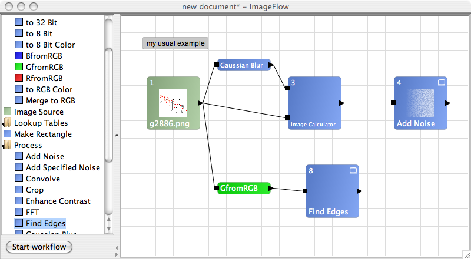

| Author: |
Daniel Senff (mail at danielsenff.de) Partially based on VisualAp by Livio |
| Source: | Source Code Version 1.0 |
| Installation: |
Delete the previous version, download Imageflow.zip and extract somewhere on your hard drive. Start the jar to run the program. To start Imageflow from ImageJ you have to move "Imageflow"-folder into ImageJ's plugin directory. After restarting ImageJ you will find a menu-item in the Plugins-Menu to start the plugin. |
| Description: |
This plugin offers a node-based graphical user interface for Macro-creation and image editing. It allows to create macros by connecting nodes to form a workflow, which represents the way macro-commands are called by ImageJ. These workflows can be saved and loaded. A workflow consists of Sources, which load or create images. They will be connected to other units to define the order of processing. A workflow requires at least one node to be defined as a display. The result of this unit will be opened after running the workflow. ImageFlow is also available as a stand-alone program that uses ImageJ as a library.
To run it, download and extract the archive
Imageflow.zip and double click on
the ImageFlow_.jar. A number of unit-elements for building graphs are included, however the list is not
very long yet. Documentation on how to create own units is included and can be used.
I can incorporate more units in later releases. |
| History: |
2009/05/13 (v1.0): Stable release 2009/02/27 (v0.9): Beta release |
| See Also: |
